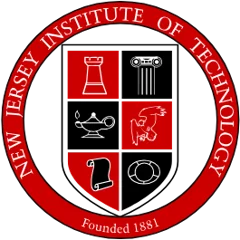
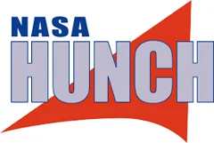
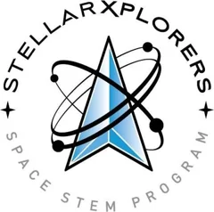

Four years in the Aerospace Engineering major at Bergen County Technical High School – Teterboro, AP Computer Science Principles, college engineering credit through dual enrollment, and two national aerospace competitions.
Engineering Courses
The Aerospace Engineering major at Bergen Tech Teterboro runs as a four-year sequence: one engineering course in 9th grade, then major courses every year after. Each course is project-based, so most units end with something designed, built, tested, and documented.
The foundation course for the major. It covers how aircraft fly (the four forces of flight, center of gravity, stability, control surfaces, aerodynamic forces and the atmosphere), the history of space exploration, and the engineering design process. Students practice it on hands-on team builds and write formal technical reports.
Work from this course
SEAPERCH underwater ROV. Team AQUADUCKS robot with a 3D-printed hook; trimming excess frame cut our average obstacle-course time from 25.4 s to 22.1 s.
Airfoil design: NACA 23018. JavaFoil lift and drag analysis from 0° to 30°, then a 3D wing section modeled in Inventor.
Puzzle cube. Five interlocking pieces made from 27 scrap hardwood cubes, built to a client design brief.
Balsa glider. I built and trimmed a glider using control flaps and nose weight. My write-up looks honestly at why it would not fly straight and what the best fliers had in common (large swept wings, tall vertical stabilizers).
Astronaut boredom research. As a four-person team, I researched and wrote a problem identification paper on how isolation and boredom on long-duration missions affect astronaut safety, nutrition, and mental health.
Engineer Your World (UT Austin)User-Centered DesignReverse EngineeringSystems Engineering
This course is built on Engineer Your World, the University of Texas at Austin's high school engineering curriculum. Each unit is a full design challenge with a real customer: define the problem, gather user needs, benchmark existing products, generate and compare concepts with tools like Pugh charts and functional models, then build, test, and pitch a solution.
Work from this course
Pinhole camera. An accessible lensless camera for an arts program serving people with limited hand dexterity.
Reverse engineering a flashlight. Our team took apart a competitor's flashlight to see how it works. We interviewed users to learn what they need, benchmarked performance, mapped functions, and generated redesign ideas, then made a pitch to "management" for the strongest one.
Safer buildings. Data-driven earthquake safety for an apartment building in Imphal, India: a balsa scale model with a pendulum mass damper, tested on a shake table.
Camera payload systems project. A subsystem team built a payload that survived repeated launches and captured a photo. It came in overweight, and taught me that subsystem teams have to communicate from day one.
Engineering careers. I researched and presented on civil engineering as a profession.
Digital Electronics is a Project Lead The Way (PLTW) course on the circuits inside every modern device. It moves through four units: foundations of electronics (components, analog vs. digital signals, the 555 timer, soldering), combinational logic (truth tables, Boolean algebra, De Morgan's theorems, Karnaugh maps, NAND/NOR-only design, number systems and adders), sequential logic (flip-flops, shift registers, synchronous and asynchronous counters), and controlling real-world systems with state machines and microcontrollers. Designs are simulated in Multisim before being built on a breadboard.
Work from this course
A soldered random number generator, a majority-vote machine, a fireplace safety controller, a seven-segment display circuit, counters and state machines, and Arduino microcontroller sketches. See the full Digital Electronics write-up.
Counter with seven-segment displays (Multisim)Sequential logic circuit (Multisim)
11th grade · 2025–26
Applied Aerospace Engineering
MATLABData AnalysisAerodynamicsFlow Visualization
This course applies programming and analysis to aerospace problems. Students learn MATLAB from the ground up (variables, arrays and matrix operations, order of operations, input/output, plotting), then use it to clean real data sets, visualize results, and compare aerodynamic designs without building a physical model for every idea.
Work from this course
Rocket nose cone study. I researched conical, tangent and secant ogive, ellipsoidal, parabolic, and Haack-series nose cones, then wrote predictions for which speed regime each shape suits best. I modeled the shapes and used MATLAB to import each STL file, extract its profile, and visualize the pressure distribution, stagnation points, and flow separation around it. I compared the cones at 25–100 m/s and made the case for the tangent ogive as the best balance of low flow disturbance and internal volume.
Drag optimization. I redesigned my nose cone to be sharper and slimmer to reduce pressure drag, then re-ran the analysis. The redesign's pressure range was wider, but its average performance was better than the original.
Flight telemetry analysis. I wrote a MATLAB script that imports a flight-telemetry spreadsheet, removes rows with missing altitude, velocity, or chamber-pressure data, calculates the mean velocity between 25 and 50 km altitude, and plots the flight profile colored by velocity.
MATLAB programming. I completed a series of programming assignments, including array and bar-graph exercises, a scholarship-eligibility script, and a data-audit activity.
AP Computer Science Principles is the College Board's introductory college-level computing course. It is built around five big ideas: creative development, data, algorithms and programming, computer systems and networks, and the impact of computing on society. Students learn to design programs collaboratively, work with lists and procedures, reason about algorithms, understand how the internet works, and weigh issues like privacy, bias, and security. The AP score combines an end-of-course exam (70%) with the Create performance task (30%), an original program each student designs and builds that must use a list, a procedure with a parameter, and an algorithm with sequencing, selection, and iteration.
Work from this course
BlockBreak (final project). A five-level block-breaking game I designed and programmed in JavaScript with p5.js. It has a paddle, ball physics, collision detection, scoring, lives, and rising difficulty, and I refined it through user testing. You can play it in the browser on its project page.
The senior capstone for the major. This year the seminar is built around a real NASA HUNCH design challenge. Teams spend the first unit defining the problem before designing anything: they work out who the user is, the environment, requirements and constraints, existing solutions, and what they still need to learn, and finish with a final problem brief. More on my HUNCH project below.
Dual Enrollment
Alongside the high school sequence, I've earned college credit through dual enrollment with three universities. In dual enrollment, high school students take college-level courses and earn transcripted credit from the partner university while still in high school.
Sept 2024 – Jan 2025
William Paterson University of New Jersey
Dual Enrollment · Engineering
William Paterson's dual enrollment program lets New Jersey high school students take college-level courses, taught at their own high school or through the university, and earn William Paterson credit.
Jan 2025 – June 2025
The University of Texas at Austin
Dual Enrollment · Engineering
UT Austin's Cockrell School of Engineering created Engineer Your World, a high school engineering curriculum that offers an optional dual enrollment pathway to earn UT college credit. Engineer Your World is the curriculum my Aerospace Engineering Principles course was built on: user-centered design, reverse engineering, data-driven decisions, and systems engineering.

Sept 2025 – June 2026
New Jersey Institute of Technology
Dual Enrollment
NJIT's dual enrollment program partners with New Jersey high schools to offer college-credit courses taught by teachers certified as NJIT adjunct faculty, so students earn NJIT credit while staying in their high school classroom.
Competitions & Programs

2026–27 · Current
NASA HUNCH: Pneumatic Tools on Mars
Design & EngineeringCAD3D PrintingPneumatics
NASA HUNCH (High school students United with NASA to Create Hardware) partners NASA with high schools across the country. Students design and build real products for NASA and the International Space Station, from flight hardware to tools and crew equipment.
My team is working on Pneumatic Tools on Mars. Replacement batteries and parts take months to reach Mars, and batteries degrade and can't be repaired there. A compressed-gas tank, by contrast, could be refilled from the thin CO₂ atmosphere, and a mechanical tool could be repaired with a 3D printer. The challenge is to design, build, and test a 3D-printed, air-powered motor and tool running on a 12 oz tank at 80 psi. The tool must either drive a 4-inch bolt into a locking nut or cut through 1/8″ aluminum angle, while staying easy to take apart and repair when parts wear out.
My contributions so far (design & engineering)
Defining the problem. Restating NASA's challenge in plain language, building a known / need-to-know / research-next table, and drafting the team's problem statement.
Identifying the deciding constraint. I argued that repairability (being able to take the tool apart and put it back together) is the requirement most likely to eliminate weak designs. It will shape how we seal and fasten the tool, and we can verify it by repeatedly disassembling and reassembling our prototypes.
Studying existing solutions. Researching hydraulic and pneumatic tools showed us that the design has to release or recirculate exhaust gas safely, and that the limited gas pressure we can use is a constraint we can't ignore.
Scoping the problem statement. We were tempted to include an ergonomic grip but cut it from the problem statement to keep the focus on the requirements that matter most. I also gave and received structured feedback in project briefings with other teams.

Current
StellarXplorers: National High School Space Challenge
Team MemberOrbit PlanningSatellite DesignSystems Tool Kit (STK)
StellarXplorers is a national space-system design competition run by the Air & Space Forces Association. Each round gives teams a realistic mission scenario with constraints. Teams then solve the kinds of problems real space engineers face: determining orbits, selecting satellite components within mass, power, and cost budgets, and planning launch vehicles. Teams train on and compete with Systems Tool Kit (STK), the professional orbit and mission simulation software used across the aerospace industry. The strongest teams from the qualifying and semifinal rounds advance to a national finals competition each spring.
I compete as a member of my school's team, applying the orbital mechanics and systems engineering from my aerospace coursework to complete mission scenarios.